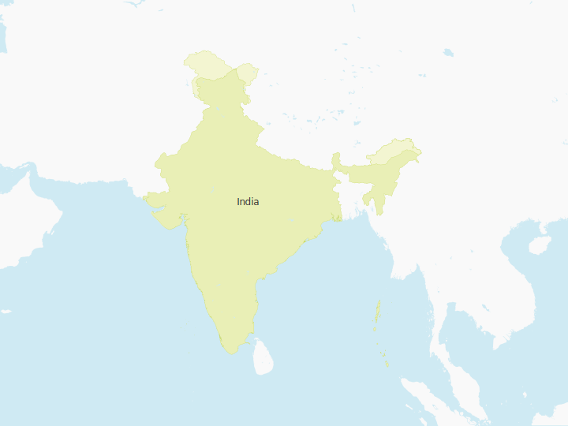
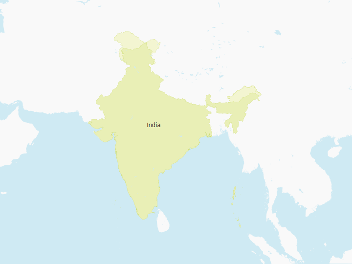

I live right here - Kolkata
There are many other children in the same situation as me.
There are many other children in the same situation as me.


It makes me proud, knowing that I have made someone happy by donating as little as 1£. "Giving brings us closer to creating the world we would want to live in.”
What a fantastic experience, sharing our compassion with others. I’m sure there’s a lot of other children that needs our support, so I’ll keep moving mountains.